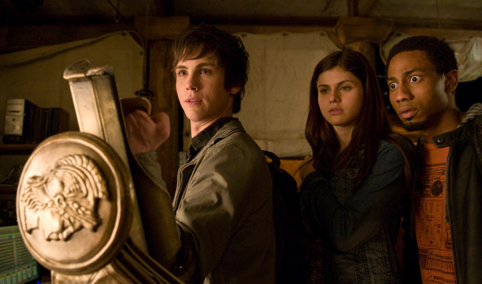

Percy Jackson
La vida de un adolescente no es fácil, menos aún si eres hijo del gran Poseidón, dios de los mares.
Por Sebastián Emanuel Alarcón
Perseo Jackson nació el 18 de agosto de 1993 en Long Island, Nueva York y es un semidiós, hijo de uno de los 3 grandes. Fue criado por su madre soltera, Sally, quien conoció a Poseidón, a finales de 1992, y le llamó la atención debido a que este portaba un tridente. Poseidón se percató de que Sally podía ver a través de la niebla y le reveló quien era en realidad. Ambos se enamoraron y pasaron el verano juntos. Algún tiempo después nacería Percy.
Su personalidad
Percy es un joven enérgetico, extrovertido, valiente y audaz. Se sabe que está dispuesto a arriesgar su vida para salvar a sus amigos, familiares, extraños y a veces incluso a sus enemigos. Tiene un sentido del humor sarcástico e inteligente, una actitud relajada y se ha ganado el respeto de la gran mayoría de los dioses. Sin embargo, no es perfecto. Tiene problemas para controlar su ira, y tiende a hacer cosas o dejar escapar palabras antes de pensar sin siquiera importarle las consecuencias, lo que generalmente le hace ganarse muchos problemas. También se siente responsable del mundo y de todo lo que va mal.
Percy, los seres inferiores hacen muchas cosas horribles en nombre de los dioses. Eso no quiere decir que los dioses lo aprobemos.
POSEIDÓN
Percy, los seres inferiores hacen muchas cosas horribles en nombre de los dioses. Eso no quiere decir que los dioses lo aprobemos. La forma en que nuestros hijos e hijas actúan en nuestro nombre...bueno, por lo general dicen más sobre ellos que sobre nosotros.
POSEIDÓN
La vida de un mestizo
no es facil
Cuando era apenas un bebé, fue atacado por una serpiente en su cuna, pero de alguna manera se las arregló para estrangularla hasta la muerte. Cuando estaba en cuarto grado, golpeó accidentalmente la palanca de mano de la pasarela cuando su escuela se encontraba de visita en el parque, junto a la piscina de los tiburones, e hizo que todos recibieran un baño no planificado. Luego, en quinto grado, disparó accidentalmente un cañón de la guerra civil que destruyó el autobús escolar. Percy relató que fue expulsado de seis escuelas en el transcurso de seis años.
Su vida es aún más complicada que la del resto de los semidioses, ya que es hijo de uno de los tres grandes, y ellos habían acordado no tener más hijos luego de los desastres ocurridos durante la Segunda Guerra Mundial. Cuando Percy llega al Campamento Mestizo (lugar donde se refugian otros semidioses), es acusado de haber robado el rayo de Zeus, y debe salir en una misión en busca de este, junto a Annabeth Chase de la que Percy siente algo y su mejor amigo, Grover Underwood.